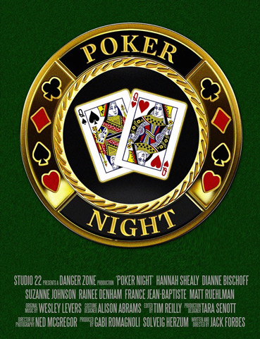

I designed the poster for Poker Night, a short film written and directed by Jack Forbes. Jack wanted a photorealistic depiction of the physical coin used in the movie. Using a photograph of the coin for reference, I reconstructed it in Illustrator and then used Photoshop blending options to mimic the texture and lighting of the physical version.
